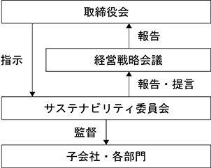

文中の将来に関する事項は、当連結会計年度末現在において当社グループが判断したものであります。
当社は、1978年12月の設立以来、「科学技術を通じて最先端テクノロジーの発展に貢献し、人々にゆとり創造を実現する」の社訓の下、その実践のため以下の内容を経営理念として掲げ、役職員一丸となって取り組んでおります。
① 当社は、開発力の向上及び生産技術の改善に取り組み、顧客により良い製品及び技術を提供することで顧客満足の最大化を目指してまいります。
② 当社は、持続した健全性・成長性を兼ね備えた事業に取り組み、企業価値の最大化に努めてまいります。
③ 最先端・高純度化学材料の開発・製造・販売を事業としている当社は、「化学物質が環境に与える影響の大きさ」を正しく認識し、顧客・社員の安全性向上や健康増進を常に念頭に置き、かつ、「環境保全活動への取り組み」を経営の最重要課題の一つと位置づけ、事業活動を行うことといたします。
④ 当社は、従業員１人ひとりが高い誇りと責任感をもって働くことの出来る公正かつ開かれた企業風土を目指してまいります。
当社グループは、安定した売上成長を図り、規模の拡大を目指しながらも、経営の効率化を推し進めることで確実に利益をあげられる強靭な企業体質の構築に努めてまいりたいと考えております。そのため売上高及び売上高営業利益率を重視すべき経営指標とし、第47期（2025年１月期）を初年度とする中期経営計画においては、３年間で売上高を約101％増加させるとともに、売上高営業利益率は25％程度を目標としております。
当社グループの主要な販売先であります半導体市場におきましては、半導体需要が緩やかに回復するとの見方があり、半導体製造用化学化合物の需要も増加していくと見込んでおります。
当社グループといたしましては、このような環境下、より一層経費削減に取り組み、半導体需要が回復した場合に備えて新規材料の市場投入と既存の材料の生産性向上を併せて図ることで、将来的な収益力を確固たるものにする必要があると考えております。また、業務のデジタル化や事業継続計画の改善、サステナビリティの追求に対する取り組み等につきましては、継続して重要な経営課題として推進してまいります。
当社グループでは第49期(2027年１月期)を最終年度とする中期経営計画において、売上高営業利益率で25％程度を目標とし、計画最終年度の売上高は226億円としながら、営業利益は61億円とする目標の達成を目指してまいります。
また、半導体市場の成長が見込まれる中国を含む東アジア市場における中長期的な成長を達成するため、日本においては、山梨県南アルプス市に南アルプス事業所の竣工を2025年に予定しております。台湾においては、子会社三化電子材料股份有限公司の銅鑼工場における生産体制の更なる増強を図ってまいります。韓国においては、関係会社SK Tri Chem Co., Ltd.と連携した事業活動を強力に推進し、中長期的なグループ全体のシナジーを強化し、事業の効率化、新規顧客の獲得を図ることを継続した戦略の柱としてまいります。
今後も継続的な海外進出や設備増強等を可能とすべく、財務体質の健全化を推し進め、強固な経営基盤の構築に努めていくとともに、コーポレートガバナンス体制をより一層整備・強化し、経営の透明性と効率性を高めることと、企業倫理、法令等の遵守にも誠実に取り組んでいくことで企業価値の向上に努めてまいります。
当社グループのサステナビリティに関する考え方及び取り組みは、次のとおりであります。
なお、文中の将来に関する事項は、当連結会計年度末現在において当社グループが判断したものであります。
当社グループでは、持続可能な社会を構築することを社会的な責任と考え、サステナビリティのある経営を目指しております。サステナビリティ推進体制を強化するため、代表取締役社長執行役員 太附 聖が委員長となる、サステナビリティ委員会を設置しております。持続可能な社会の実現及び企業価値向上を目指すため、サステナビリティに係る当社グループの推進事項に関して四半期毎に開催及び経営戦略会議に報告・提言を行っております。

(2) 戦略
① 気候変動による影響に関する方針、戦略
当社グループでは、気候変動による影響はリスクにも機会にもなりうると考えています。2022年度に将来的な気候変動の影響を評価するためのTCFDフレームワークに則り、次のとおり、シナリオ分析を実施いたしました。
② 人材の育成及び社内環境整備に関する方針、戦略
当社は、企業価値の持続的な向上のためには従業員の育成と能力を最大限発揮してもらうことが必須であり、そのため従業員は会社にとって最も重要な経営資本と考えております。この考えのもと、階層別研修や各種スキルアップ研修、資格取得支援等を積極的に行うことで、従業員１人ひとりの成長をサポートし、「ゆとり創造」の経営理念の下、仕事と生活の調和を図りながら最大限能力を向上・発揮できる職場環境の構築に取り組んでおります。
また、当社の化学材料は、少量・多品種・高純度という特徴を有しております。これらの特徴を維持・改善していくためには、ニッチな技術、ノウハウの蓄積・継承が重要であると考えております。そのため、当社では離職率を重要な数値として、人材の定着化を目指し、仕事と育児・介護の両立支援等を含めた福利厚生の充実・多様な人材が自由に意見を出し合えるよう、上司部下間でのミーティングを重視した人事評価制度・従業員の心身の健康管理を目指した健康経営などに取り組んでおります。
① 気候関連リスクの識別・評価プロセス
気候変動を含む「環境全般」のリスクについては積極的にリスクの識別・評価を行っております。当社グループの主要事業に対して具体的な検討を行い、2030年時点における主要なリスク及び機会による財務インパクトの算定、対応策の検討を行いました。さらに機会において財務インパクトの評価に加え、市場規模、脱炭素への貢献度の２つの項目について評価を行い、自社の事業開発及び事業成長の可能性について検討を行いました。この活動と連携して、サステナビリティ全体におけるリスク機会の検討については、より広範に対応するためサステナビリティ委員会で実施しており、特に気候変動に関する対応に力を入れております。
② 気候関連リスクの管理プロセス
気候変動を含むサステナビリティに関する重要なリスクはサステナビリティ委員会にて検討された後、必要に応じて経営戦略会議に報告しております。経営戦略会議は報告された気候関連リスク及びそれに対する対応方針について討議し最終決定しております。経営戦略会議において討議決定された対応方針はサステナビリティ委員会から各部署の責任者を通じて各部署の事業活動に反映され、対応状況をモニタリングしております。
人材確保に関するリスクの内容については「３ 事業等のリスク (2) 事業遂行上のリスクについて ③ 人材の確保について」をご参照ください。
① 二酸化炭素排出量削減に関する実績、指標及び目標
(注) 2023年度の二酸化炭素排出量に関しましては2024年度夏季に発行いたします、統合報告書にて記載する予定であります。
② 人材の育成及び社内環境整備に関する方針に関する指標の内容並びに当該指標を用いた目標及び実績、指標及び目標
(注) １ 当社における指標及び目標、実績であります。
２ 2023年度の当社全体の女性労働者の割合は15.42％であります。
以下において、当社グループの事業展開上のリスク要因となる可能性があると考えられる事項を記載しております。また、当社グループとしては必ずしも事業上のリスクとは考えていない事項についても、投資判断、あるいは当社グループの事業内容を理解する上で重要と考えられる事項については、投資者に対する積極的な情報開示の観点から記載しております。なお、文中における将来に関する事項は、当連結会計年度末現在において当社グループが判断したものであります。
当該リスクが顕在化する可能性の程度や時期、当該リスクが顕在化した場合に当社グループの経営成績等に与える定量的な影響について、合理的に予見することが困難であるものについては記載しておりません。
当連結会計年度の売上高は半導体市場向けが高い割合を占めており、半導体業界の動向に大きく影響される傾向にあります。当連結会計年度において、日本、台湾、韓国の大手半導体デバイスメーカー向け売上高が過半(ディーラー経由での販売も含む)を占めており、これらのメーカーの生産動向が当社グループの財政状態及び経営成績に影響を及ぼす可能性があります。
また、半導体製造前工程のCVD工程及びエッチング工程を得意とする当社グループは、シリコンウェハの生産動向に特に大きく影響を受ける傾向にあります。
当社グループでは、そうしたリスクを防止あるいは分散するため、半導体市場のうち、刻々と変化する先端開発分野における変化を先取りするとともに、市況サイクルの異なる国内市場と海外市場のバランスを取りつつ、他方、これまでの半導体業界依存の軽減のため、新規分野に向けた材料の開発等にも注力し対処していく所存であります。
しかしながら、今後市況が大きく変化し、縮小傾向に転じた場合、又は業界の技術革新に当社グループが追随出来ない場合には、当社グループの財政状態及び経営成績に影響を与える可能性があります。
② 特定の製品への依存について
当連結会計年度における当社グループの売上高については、半導体向け材料の中でも、特に高誘電率絶縁膜材料といわれる分野への依存度が高くなっております。当社グループでは高誘電率絶縁膜材料以外の新規材料の開発、拡販にも努めておりますが、当分野の売上が減少した場合には、当社グループの財政状態及び経営成績に影響を与えるおそれがあります。
当社グループは、最先端の半導体に用いられる高純度の化学材料において、技術的な優位性やノウハウを保持していることや、ニッチな市場であることから、現状、競争相手となる企業は少ないものと考えております。
しかしながら、今後、新規に当社グループと競合する分野、製品に他企業が参入した場合、競争の激化によって当社グループの財政状態及び経営成績に影響を与える可能性があります。
当社グループの製品は、その原料に市況変動に左右される化学薬品や特殊な金属材料を多く使用し、他方、金属容器については、同様に市況変動に左右されるステンレス材料を使用しております。
当社グループでは、市況及び顧客の需要に基づいた販売計画に基づいて、安定供給を可能とするための在庫水準を適正な価格で確保すべく原料調達を進めておりますが、世界の経済情勢や政治の動向等により、急激に購入価格が変動するとともに入手が困難になる可能性があります。
今後、販売計画を達成するために必要な主要原料が確保できない場合は、当社グループの財政状態及び経営成績に影響を与える可能性があります。
また、購入価格が急激に上昇した際に販売価格への転嫁ができない場合、もしくは時間を要する場合や、逆に購入価格が急激に下降した際に相当量の在庫を有していた場合等においても当社グループの財政状態及び経営成績に影響を与える可能性があります。
当社グループは、製品等の輸出及び原材料等の輸入において外貨建取引を行っております。当連結会計年度における総売上高に占める海外ユーザー向けの売上高は、概ね70％となっており、その一部は外貨建の決済条件となっております。当社では財務部門において為替相場を継続的にモニタリングしており、適宜必要に応じて為替予約等を行っておりますが、急激な為替変動があった場合には、当社グループの財政状態及び経営成績に影響を与える可能性があります。
また、海外関係会社の業績、資産及び負債につきましては、現地通貨で発生したものは円換算したうえで連結財務諸表を作成しておりますが、当該現地通貨の為替変動があった場合には、当社グループの財政状態及び経営成績に影響を与える可能性があります。
当社グループは、ISO9001品質マネジメントシステムの採用で、社内生産に関しては当然のこと、主たる協力会社にも同様の体制整備を要請しながら、総合的な品質保証体制と継続的な改良・改善体制の運用に努めてまいりました。そのことにより、不良品発生の低減に注力しておりますが、クレーム発生の可能性は皆無ではありません。また、製造物賠償に関してはＰＬ保険に加入しており、現時点におきましては、企業の存続やユーザーの事業継続を脅かすような甚大なクレームや製造物責任につながる事態は考えられません。しかしながら、万一そうした事態が発生した場合には、クレームに対する補償、対策が製造原価の上昇を招き、当社グループのブランドの評価、財政状態及び経営成績に影響を与える可能性があります。
当社グループは刻々変化する市場環境に対応して、常時、高度な研究開発を継続していく必要があり、そのため優秀な人材の確保と維持は事業展開上非常に重要な事項となっております。そのため、当社グループにおいては社内教育の充実、海外派遣やジョブローテーション等による人材育成体制の強化に努めるとともに、役職員全員が安全かつ安心して働ける職場環境の整備に努めておりますが、必要とする人材の獲得に困難が発生したり、あるいは当社グループの人材が社外に流出した場合には、当社グループの財政状態及び経営成績に影響を与える可能性があります。
当社グループは、半導体メーカーの最先端の半導体に係る製造工程や材料の特性等の情報を知った上で、高純度の化学材料の開発、提案を行っております。当社グループでは不正アクセス等への物理的、システム的なセキュリティ対策を講じるとともに、営業秘密や情報セキュリティに関する社内規程を整備し、社員教育を徹底するなど、当社グループの情報管理体制の維持・強化に努めております。しかしながら当社グループの従業員が事業上知り得た顧客の技術情報を外部に漏洩した場合、当社グループの信用の失墜による取引関係の悪化や、技術情報の漏洩による損害に対する賠償を請求されること等により、当社グループの財政状態及び経営成績に影響を与える可能性があります。
また、当社グループが製造する高純度化学材料は、創業以来蓄積してきた高純度化や安定生産に係るノウハウが重要な要素となっており、当社グループが保有する高純度化のノウハウ等に係る情報が、何らかの形で社外に流出した場合、技術的な優位性を維持できなくなることにより、当社グループの財政状態及び経営成績に影響を及ぼす可能性があります。
当社グループでは高純度化学材料を充填するための容器を外部からの仕入により調達しておりますが、そのうち、当社グループの販売先である半導体メーカー等の半導体製造装置に合わせた特殊仕様の容器については、主に㈱下山工業から仕入れており、同社との取引関係が何らかの理由により解消となった場合、一時的に当社グループの財政状態及び経営成績に影響を与える可能性があります。
⑥ カントリーリスクについて
当社グループは台湾に子会社、韓国に合弁会社を有しており、台湾と韓国の最終ユーザー向け販売の増加が今後の成長要因と考えております。特に台湾子会社は工場の稼働も本格的となり、より重要な生産拠点となり、輸送コストの削減や台湾半導体メーカーの期待に寄り添えることができたと認識しております。
当社グループは、事業展開をしている各国・各地域におけるカントリーリスクに係る情報を収集するとともにモニタリングを実施しており、地政学要素を見極めながら、安定的な事業運営に向けて取り組んでおりますが、両地域において、法律や規制の変更、テロ・戦争・その他の要因による社会的混乱等が生じた場合、当社グループの事業活動に支障が生じ、財政状態及び経営成績に影響を与える可能性があります。
⑦ 関係会社の業績変動について
当社グル―プは、当社と連結子会社１社、関連会社２社で構成されております。当社グループではグループ間の人的・物的な連携や情報共有等によりグループ各社の事業リスクの軽減や対応に努めておりますが、グループ各社の事業の遂行が順調に進まない場合や、予期せぬ事象等により、これら関係会社の業績に大きな変動が生じた場合、財政状態及び経営成績に影響を与える可能性があります。
⑧ 物流リスクについて
当社グループは、事業を営むに当たり、直接及び間接的に原材料・部材等の輸入を行っているとともに、海外顧客への輸出により販売を行っておりますが、現在、輸出入に際しては、世界的なコンテナ不足、船便の遅れ、輸送費の値上げ等が起きております。今後さらに一層の物流の状況が悪化した場合や、費用が増大した場合、財政状態及び経営成績に影響を与える可能性があります。
当社グループは、既存製品の改良や新規製品の研究開発等により、研究開発費、それに関連する設備投資が先行して発生しております。そうしたリスクを防止あるいは分散するため、研究開発段階でのマーケティングに注力してリスクを分散するとともに、研究開発プロジェクト管理の徹底を図り、他企業との提携を積極的に推進しております。
しかしながら、多大な研究開発費や設備投資費用を投入したにもかかわらず、製品開発等が軌道に乗らなかった場合には、当社グループの財政状態及び経営成績に影響を与える可能性があります。
当社グループの製造する製品には、毒物・劇物が含まれ、またそれらの製品を製造する際に使用する材料にも毒物・劇物が含まれております。また、当社グループは国内での営業取引のみならず、外国企業との輸出入取引を行っている関係上、日本及び諸外国の法令等による諸規制を受けております。それらの製品及び材料取扱を規制する法律・法令等の主なものとしましては、「毒物及び劇物取締法」、「消防法」、「高圧ガス保安法」、「土壌汚染対策法」、「特定化学物質の環境への排出量の把握等及び管理の改善の促進に関する法律」、「化学兵器の禁止及び特定物質の規制等に関する法律」等があります。
当社グループでは、国内外の法令等の遵守並びに運用状況・改訂動向に関する情報収集に努めており、また、当社グループにおきましてはISO14001環境マネジメントシステムにより、周辺環境への配慮を行っていることで、現在のところ主要な事業活動の前提となる事項についてその継続に支障を来す要因は発生しておりませんが、現在又は将来の法律及び諸規制を遵守できなかった場合には、当社グループが債務を負ったり、免許・届出・認可等の取り消しや一定期間の停止を含む罰則の適用を受けたり、事業の中断を含む公的命令を受けたり、その後の事業の継続に障害となる信用の低下を被ったりすること等により、当社グループの財政状態及び経営成績に影響を与える可能性があります。
（主な許認可の状況）
また、将来において法的規制の強化等がなされ、その対応のための生産コスト等が増大した場合には、当社グループの財政状態及び経営成績に影響を与える可能性があります。
当社グループの事業分野に関する知的財産権については、特許権を取得しております。当該知的財産については、製品化に至る種々のノウハウと密接不可分の関係にあり、知的財産権を利用されることにより当社グループの業績が重大な影響を受ける可能性は少ないと考えております。しかしながら、万が一類似製品が登場した場合には、当社グループの財政状態及び経営成績に影響を与える可能性があります。
他方、当社グループは第三者の知的財産権を侵害しないよう入念な事前調査を行っておりますが、当社グループの認識の範囲外のことで、これを侵害する可能性があり、これにより、当社グループが第三者と知的財産権をめぐって損害賠償、対価の支払あるいは使用差し止め等を請求され、当社グループの財政状態及び経営成績に影響を与える可能性があります。
(6) 災害等について
当社グループの生産拠点である本社工場及び上野原第二工場は、山梨県上野原市の工業団地に集中しております。当社グループでは、台湾子会社である三化電子材料股份有限公司において工場を建設する等、生産拠点の分散化に努めておりますが、地震等の自然災害や火災等の事故によって、本社工場と上野原第二工場が同時に被害を受け、設備が壊滅的な損害を被る可能性があります。この場合は当社グループの操業が中断し、生産及び出荷が遅延することにより売上高が低下し、さらに生産拠点等の修復のために多額の費用を要することとなる場合には、当社グループの財政状態及び経営成績に影響を与える可能性があります。
当連結会計年度における当社グループの財政状態、経営成績及びキャッシュ・フローの状況の概要は次のとおりであります。
(流動資産)
当連結会計年度末における流動資産の残高は、前連結会計年度末比86,051千円増加し、19,008,618千円となりました。その主な要因は、受取手形及び売掛金、現金及び預金が減少した一方で仕掛品、原材料及び貯蔵品が増加したこと等によるものであります。
(固定資産)
当連結会計年度末における固定資産の残高は、前連結会計年度末比336,677千円減少し、12,856,314千円となりました。その主な要因は、設備投資に伴い有形固定資産が増加した一方で関係会社からの配当金入金により投資有価証券が減少したこと等によるものであります。
(流動負債)
当連結会計年度末における流動負債の残高は、前連結会計年度末比1,121,976千円減少し、2,553,693千円となりました。その主な要因は、買掛金、未払法人税等が減少したこと等によるものであります。
(固定負債)
当連結会計年度末における固定負債の残高は、前連結会計年度末比823,004千円減少し、1,740,824千円となりました。その主な要因は、長期借入金が減少したこと等によるものであります。
(純資産)
当連結会計年度末における純資産の残高は、前連結会計年度末比1,694,355千円増加し、27,570,415千円となりました。その主な要因は、親会社株主に帰属する当期純利益の計上により利益剰余金が増加したこと等によるものであります。
当連結会計年度におけるわが国経済は、新型コロナウイルス感染症が５類感染症に移行し、経済活動の正常化が進み、景気は緩やかに持ち直しの動きが見られましたが、ウクライナや中東情勢等の地政学リスクの高まりによる資源高騰や為替リスクの影響等、不安定な経済状況が続いておりました。
当社グループの主要な販売先であります半導体業界におきましては、半導体メーカーの在庫調整や設備投資計画の見直しによる減産の影響を受け、半導体製造用化学化合物の需要に関しても当初の見通しより低い水準で推移いたしました。
このような状況下、当社グループといたしましては、半導体業界の需要回復に備えるべく、生産設備の導入や人員増強等を行い、全社的に業務のデジタル化や新規製品製造の体制構築を進めるとともに、2025年に操業を予定しております南アルプス事業所建設工事のための準備を行ってまいりました。その他、事業活動における環境負荷の軽減や作業安全性向上等に対する投資にも積極的に取り組んでまいりました。
また、中期経営計画における経営方針に基づき、半導体製造用化学化合物の生産・開発能力の向上を一層推し進め生産・品質管理体制を継続的に強化すると同時に、事業継続計画の改善、サステナビリティの追求に関する取り組み等につきましても推進してまいりました。
利益面に関しましては、収益性を維持しながら持続的な成長を図るため、引き続き全社を挙げての経費削減に取り組むとともに、グループ会社や部門間の連携を深め、一層の収益向上を図ってまいりました。
その結果、売上高は11,246,293千円(前年同期比18.5％減)、営業利益は1,947,989千円(同44.4％減)となり、また、韓国関係会社SK Tri Chem Co., Ltd.に係る持分法による投資利益の計上等により、経常利益は3,276,706千円(同47.0％減)、親会社株主に帰属する当期純利益は2,470,625千円(同48.9％減)となりました。
なお、当社グループの事業は、半導体等製造用高純度化学化合物事業並びにこれらの付帯業務の単一セグメントであるため、セグメント別の記載を省略しております。
当連結会計年度末における現金及び現金同等物（以下「資金」という。）は、前連結会計年度末に比べ640,454千円減少し、10,497,345千円となりました。
当連結会計年度における各キャッシュ・フローの状況とそれらの要因は次のとおりであります。
(営業活動によるキャッシュ・フロー)
営業活動の結果得られた資金は2,972,015千円(前年同期比3,420,042千円の収入の減少)となりました。これは主に税金等調整前当期純利益の計上3,276,706千円、利息及び配当金の受取額2,542,901千円等のプラス要因が、法人税等の支払額1,520,343千円、棚卸資産の増加額1,260,089千円等のマイナス要因を上回ったことによるものであります。
(投資活動によるキャッシュ・フロー)
投資活動の結果支出した資金は1,781,833千円(同224,263千円の支出の増加)となりました。これは主に、有形固定資産の取得による支出1,739,539千円等によるものであります。
(財務活動によるキャッシュ・フロー)
財務活動の結果支出した資金は1,858,875千円(同155,292千円の支出の増加)となりました。これは主に、配当金の支払額973,933千円、長期借入金の返済による支出785,442千円等によるものであります。
③ 生産、受注及び販売の状況
当社グループの事業は、半導体等製造用高純度化学化合物事業並びにこれらの付帯業務の単一セグメントであります。
当社グループの生産・販売品目は広範囲かつ多種多様であり、同種の製品であっても、その容量、構造、形式、用途等は必ずしも一様ではないことから、記載しておりません。
生産実績と同様の理由に加え、受注生産形態をとらない製品が多いことから、記載しておりません。
当連結会計年度における販売実績は次のとおりであります。
(注) 主な相手先別の販売実績及び当該販売実績の総販売実績に対する割合は、次のとおりであります。
(2) 経営者の視点による経営成績等の状況に関する分析・検討内容
経営者の視点による当社グループの経営成績等の状況に関する認識及び分析・検討内容は次のとおりであります。
なお、文中の将来に関する事項は、当連結会計年度末現在において当社グループが判断したものであります。
当社グループの連結財務諸表は、わが国において一般に公正妥当と認められる会計基準に基づき作成されております。この連結財務諸表の作成にあたって、当社の連結財務諸表で採用する重要な会計方針は、「第５ 経理の状況 １ 連結財務諸表等 （１）連結財務諸表 注記事項 連結財務諸表作成のための基本となる重要な事項 ５ 会計方針に関する事項」に記載しております。この連結財務諸表の作成にあたっては、過去の実績や状況に応じ合理的と考えられる様々な要因に基づき見積り及び判断を行っておりますが、不確実性が内在しているため、将来生じる実際の結果と異なる可能性があります。
連結財務諸表の作成にあたって用いた会計上の見積り及び仮定のうち、重要なものは、「第５ 経理の状況 １ 連結財務諸表等(1）連結財務諸表 注記事項 （重要な会計上の見積り）」に記載しております。
（売上高）
売上高は、前連結会計年度に比べ18.5％減の11,246,293千円となりました。その主な要因は、当社グループの主要な販売先であります半導体業界におきまして、半導体メーカーの在庫調整や設備投資計画の見直しによる減産の影響等を受けた結果、当社グループの化学材料の出荷が減少したこと等によるものであります。
（売上総利益）
売上総利益は、売上高の減少等に伴い同26.8％減の4,086,045千円となりました。売上総利益率は減価償却費の増加に伴い製造経費等が増加したこともあり、前連結会計年度の40.4％から当連結会計年度は36.3％となりました。
（販売費及び一般管理費、営業利益）
販売費及び一般管理費は、同3.1％増の2,138,056千円となりました。その主な要因は、研究開発費等が増加したことによるものであります。その結果、営業利益は同44.4％減の1,947,989千円となりました。
（営業外損益、経常利益）
営業外収益は、持分法による投資利益の減少等により、同49.2％減の1,377,968千円となりました。
営業外費用は、固定資産除却損の計上等により、同53.4％増の49,250千円となりました。その結果、経常利益は同47.0％減の3,276,706千円となりました。
（特別損益、税金等調整前当期純利益）
特別損益は、特別利益及び特別損失ともに計上がありませんでした。その結果、税金等調整前当期純利益は同47.0％減の3,276,706千円となりました。
（親会社株主に帰属する当期純利益）
法人税、住民税及び事業税に法人税等調整額を加えた税金費用は806,081千円となりました。その結果、親会社株主に帰属する当期純利益は同48.9％減の2,470,625千円となりました。
当社グループの財政状態の分析については、「第２ 事業の状況 ４ 経営者による財政状態、経営成績及びキャッシュ・フローの状況の分析 （１）経営成績等の状況の概要 ①財政状態及び経営成績の状況 イ．財政状態の状況」に記載しております。
当社グループの経営成績に重要な影響を与える要因については、「第２ 事業の状況 ３ 事業等のリスク」に記載しております。
当社グループの主な資金需要は事業上必要な運転資金や設備投資であり、これらの資金は主に自己資金のほか、必要に応じて銀行等金融機関の借入によって調達する方針としております。
当連結会計年度におけるキャッシュ・フローの状況につきましては、「第２ 事業の状況 ４ 経営者による財政状態、経営成績及びキャッシュ・フローの状況の分析 （１）経営成績等の状況の概要 ②キャッシュ・フローの状況」に記載しております。
なお、重要な設備の新設等の計画については、「第３ 設備の状況 ３ 設備の新設、除却等の計画」に記載しております。
当社グループでは、最新の外部、内部環境を反映させた、今後の３年間の中期経営計画（毎年見直すローリング方式）を策定し、事業に取り組んでおります。2024年１月期の計画値と実績値の結果は以下のとおりであります。
売上高及び営業利益につきましては、当社グループの主要な販売先であります半導体業界におきまして、半導体メーカーの在庫調整や設備投資計画の見直しによる減産の影響等を受けた結果、当社グループの化学材料の出荷が減少し、期初計画を下回る結果となりました。それに加え、経常利益及び親会社株主に帰属する当期純利益につきましても、韓国関連会社SK Tri Chem Co., Ltd.の業績が同様の理由で落ち込んだことから、期初計画を下回る結果となりました。
当社グループでは、安定した売上成長を図り、規模の拡大を目指しながらも、経営の効率化を推し進めることで確実に利益をあげられる強靭な企業体質の構築に努めてまいりたいと考えていることから、特に、売上高及び売上高営業利益率を重視すべき経営指標としております。なお、売上高営業利益率に関しては25％程度を目標としております。
合弁契約
当社グループの事業は、半導体等製造用高純度化学化合物事業並びにこれらの付帯業務の単一セグメントであります。
当連結会計年度の研究開発活動は、基本的に従来のテーマを踏襲しつつ、顧客のニーズや新規案件にも柔軟に対応することを目標に掲げております。
当社グループの研究開発は、当社開発部を中心として、生産技術部及び製造部等とも連携を取りながら活動を進めることにより、迅速かつ効率的に結果を出すことができる体制を構築しております。
当連結会計年度における当社グループが支出した研究開発費の総額は
なお、テーマ別の研究開発活動は次のとおりであります。
半導体の進歩に伴い、使用される材料や技術も日々進化し続けております。当社グループでは今後ますます高度化する顧客の要求事項に対し、他社に先駆けていち早く最先端材料の市場への投入や新規技術に対応すべく、さらに活発な研究活動を続けてまいります。また、独自開発のみならず、デバイスメーカー、装置メーカーの研究所や大学等と共同での材料開発も随時進めており、その結果の一部につきましては学会等で発表しております。
当社グループでは創業以来、半導体・光ファイバー向け材料等、最先端産業向けに高純度化学材料を扱ってまいりました。これらのノウハウを活用し、エネルギー分野に向けましても新規材料の開発を進めております。既に一部ご採用頂いている製品もあり、今後更なる展開に向けて製品開発を進めてまいります。
半導体製造において要求されるレベルの高純度化学材料は、その性質上、デリバリーや供給設備について、安全性及び品質を保持しながらハンドリングするための技術・ノウハウが不可欠であります。当社グループでは創業以来蓄積してきたそれらの知見を活用し、個別のニーズに応じた特殊容器の開発や液面レベルセンサー等の容器に付随する周辺機器の開発等を行っており、外部に供給しております。
また、要求される品質レベルは絶えず進化していますが、それに対応すべく要素技術の開発にも注力しております。確立した技術は、積極的に社内設備にも応用しており、より一層の作業の安全確保と、製造ラインにおける業務の効率化・省力化による製造原価の低減を図っております。
商品の新規開発におきましては、その後の品質・供給量・価格等における要求に対応することなく、顧客に広く浸透することはあり得ません。これら顧客の量産化ニーズに迅速に対応するため、今までにも増して新規開発品の急速な製品化・スケールアップ等が必要となっております。
当社グループはこれらの要求に対し、品質・数量両面での安定供給を図るため、今後とも顧客からのニーズにこだわった開発をモットーとして、初期開発品から量産スケールまでの工程最適化の研究・開発を継続し、開発部門から製造部門まで一貫した量産化体制を構築することで、研究開発活動の迅速な商品化、内製化に繋げてまいります。